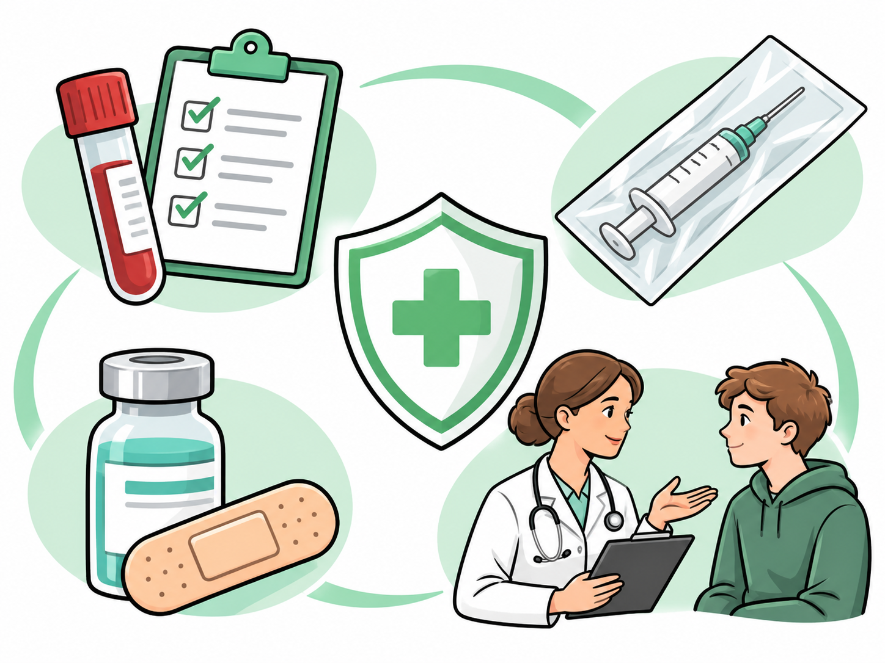

Бактериальные инфекции
Сифилис, гонорея, хламидиоз
Их вызывают бактерии. При выявлении заболевания лечение назначает медицинский специалист.
Почему для защиты от инфекций важно знать не только названия заболеваний, но и реальные пути их передачи? Разберём основные правила профилактики и распространённые заблуждения.

Инфекции, передаваемые половым путём (ИППП), — это инфекции, при которых возбудитель может передаваться при половых контактах. Их вызывают бактерии, вирусы и другие микроорганизмы. Некоторые инфекции имеют и другие пути передачи.
Их вызывают бактерии. При выявлении заболевания лечение назначает медицинский специалист.
Возбудителями являются вирусы. Гепатит C преимущественно передаётся через кровь; половая передача возможна, но встречается реже.
Некоторые ИППП длительное время могут протекать без заметных симптомов. Поэтому отсутствие жалоб само по себе не подтверждает отсутствие инфекции.
Передача при половом контакте с человеком, имеющим инфекцию. Для ряда возбудителей это основной путь.
Возможен при использовании общих игл или нестерильных инструментов и других ситуациях контакта с заражённой кровью.
Для отдельных инфекций возможна передача во время беременности, родов или грудного вскармливания; особенности зависят от возбудителя.
Обычные бытовые контакты не приводят к передаче ВИЧ. Для заражения необходимы определённые биологические жидкости и условия их попадания в организм. Поэтому совместное нахождение в общественных местах и повседневное общение безопасны в отношении ВИЧ.
Обычное совместное использование полотенец и постельного белья также не является путём передачи ВИЧ. Но индивидуальные бритвы, зубные щётки и предметы, на которых может быть кровь, нельзя использовать совместно: это отдельная ситуация, не равная обычным бытовым контактам.
Правильное использование презерватива снижает риск передачи многих ИППП, в том числе ВИЧ, но не гарантирует абсолютной защиты от всех инфекций.
Медицинские и косметические процедуры должны проводиться безопасными инструментами. Нельзя совместно использовать иглы, шприцы, бритвы и другие предметы, которые могут контактировать с кровью.
Вакцинация против гепатита B является специфической профилактикой. Также существует вакцина против вируса папилломы человека (ВПЧ). Против ВИЧ и гепатита C общедоступных профилактических вакцин нет.
При возможном риске заражения необходимо обратиться к медицинскому специалисту для оценки ситуации и обследования. Для ВИЧ в некоторых случаях после возможного контакта применяется экстренная профилактика, которую важно начать как можно раньше, не позднее 72 часов.
1. Можно ли заразиться ВИЧ, если пользоваться одним туалетом или сидеть рядом на уроке с человеком, имеющим ВИЧ-инфекцию?
Нет. ВИЧ не передаётся через сиденье унитаза, воздух и обычное общение.
2. Почему не следует пользоваться чужой бритвой, даже если предмет выглядит чистым?
На ней могут оставаться незаметные следы крови, а для некоторых инфекций контакт с заражённой кровью является путём передачи.
3. Почему вакцинация против гепатита B не заменяет другие меры профилактики?
Она защищает от определённого возбудителя, но не обеспечивает защиту от всех ИППП. Нужны меры, учитывающие разные пути передачи.